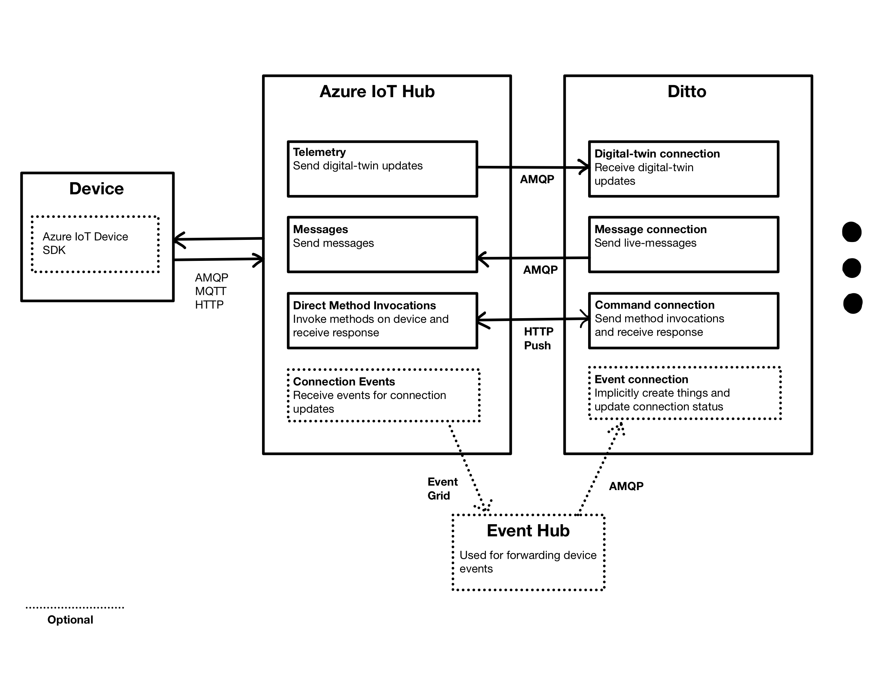

Use Eclipse Ditto with Azure IoT Hub as message broker
Published by 
This blogpost is based upon Eclipse Ditto Version 1.5.0, the Azure IoT Suite as of 2021-03-19 and the azure-iot-device-client version 1.29.2.
Connecting devices to Eclipse Ditto via Azure IoT Hub
This blog post elaborates on connecting and managing devices in Eclipse Ditto by using the Azure IoT Hub as a message broker.

The basic functionality that can be used at the time of creating this blogpost are:
- [D2C] Sending telemetry data from the device to update its Ditto digital-twin representation.
- [D2C] Same ID enforcement based on the Azure IoT Hub device-id to prevent spoofing other digital-twins.
- [C2D] Sending live-messages to the device.
- [D2C] Sending feedback to live messages to the service.
Setting up connections in Ditto
The features described above will work with an “out-of-the-box” Azure IoT Hub subscription, so no additional configuration is needed in the IoT Hub. In order to connect Ditto to the IoT Hub you have to set up two AMQP 1.0 connections. One for receiving telemetry data, the other for sending live-messages and receiving live-message feedback.
Telemetry Connection
This connection subscribes to telemetry messages, published by the Azure IoT Hub built-in “Event Hub like” endpoint.
Adding an enforcement for the {{ thing:id }} based on the {{ header:iothub-connection-device-id }} prevents
applying a digital-twin update to the twin of another device (Device Spoofing).
To establish this connection the placeholders below have to be substituted by:
-
{{userName}}: TheSharedAccessKeyNamein your Event Hub-compatible endpoint (i.e. service). -
{{password}}: TheSharedAccessKeyin your Event Hub-compatible endpoint. -
{{endpoint}}: TheEndpointin your Event Hub-compatible endpoint (Cut leading “sb://” and trailing slash, e.g.. ihsuprodblres055dednamespace.servicebus.windows.net). -
{{entityPath}}: TheEntitiyPathin your Event Hub-compatible endpoint (e.g.. hubname-8584619-2e72252706).
Note: You can use the “service” IoT Hub policy instead of the “iothubowner” policy, since this is more restricitve, and represents the actual use of Ditto as a northbound service.
{
"id": "azure-example-connection-telemetry",
"connectionType": "amqp-10",
"connectionStatus": "open",
"failoverEnabled": false,
"uri": "amqps://{{userName}}:{{password}}@{{endpoint}}:5671",
"source": [
{
"addresses": [
"{{entityPath}}/ConsumerGroups/$Default/Partitions/0",
"{{entityPath}}/ConsumerGroups/$Default/Partitions/1"
],
"authorizationContext": ["ditto"],
"enforcement": {
"input": "{{ header:iothub-connection-device-id }}",
"filters": [
"{{ thing:id }}"
]
}
}
]
}
-
Further information on D2C messaging capabilities of Azure IoT Hub
-
Further information on the built-in “event-hub like” endpoint of Azure IoT Hub
Message connection
This connection enables forwarding live messages to the Azure IoT Hub (which forwards it to the device) and receiving feedback to these live-messages from the device.
Adding the header-mapping "message_id": "{{header:correlation-id}}" enables Azure IoT Hub to correlate messages.
Adding the header-mapping "to": "/devices/{{ header:ditto-message-thing-id }}/messages/deviceInbound" is
necessary for correct message routing by Azure IoT Hub. The header ditto-message-thing-id will be set as a
default header by Ditto.
To establish this connection the placeholders below have to be substituted:
-
{{userName}}: The name of the chosen IoT Hub policy + “@sas.root.” + the name of your IoT Hub (i.e. service@sas.root.my-hub). -
{{hostName}}: The Hostname of your IoT Hub (i.e. my-hub.azure-devices.net). -
{{encodedSasToken}}: An URL encoded SAS token. Information on how to generate a token can be found at az iot hub generate-sas-token. The generated token has to be additionally URL encoded (browser console ->encodeURI('{{generatedToken}}')).
Note: The generated SAS token has a maximum TTL of 365 days, so the token has to be changed to a newly generated before expiry.
Otherwise, the connection tries to reconnect or closes automatically, when failoverEnabled is set to false.
{
"id": "azure-example-connection-messages",
"connectionType": "amqp-10",
"connectionStatus": "open",
"failoverEnabled": false,
"uri": "amqps://{{userName}}:{{encodedSasToken}}@{{hostName}}:5671",
"target": [
{"address": "/messages/devicebound",
"topics": [
"_/_/things/live/messages"
],
"authorizationContext": ["ditto"],
"headerMapping": {
"message_id": "{{header:correlation-id}}",
"to": "/devices/{{ header:ditto-message-thing-id }}/messages/deviceInbound"
}
}
]
}
The java azure-iot-device-client currently can not be used to receive messages with JSON as body. Thus, the messages’ payload has to be byte-encoded.
This can be achieved by configuring an outgoing JavaScript payload mapper in the message connection:
function mapFromDittoProtocolMsg(
namespace,
name,
group,
channel,
criterion,
action,
path,
dittoHeaders,
value,
status,
extra
) {
let headers = dittoHeaders;
let textPayload = null;
let bytePayload = Ditto.stringToArrayBuffer(Ditto.buildDittoProtocolMsg(namespace, name, group, channel, criterion, action, path, dittoHeaders, value).toString());
let contentType = 'application/octet-stream';
return Ditto.buildExternalMsg(
headers,
textPayload,
bytePayload,
contentType
);
}
Possible improvements
Some features of Ditto could be used in combination with Azure IoT Hub with some adjustments. These include:
- Using the
ImplicitThingCreationMapperto implicitly create a new thing when a new device is registered in Azure IoT Hub. - Using the ConnectionStatusMapper to update the ConnectionStatus of things, when their devices disconnect from Azure IoT Hub.
- [C2D] Directly invoke methods on the device (Direct Method Invocation).
Using the ImplicitThingCreation and ConnectionStatus features based on Azure IoT Hub events
Azure IoT Hub has the possibility to publish events for status changes of device connections and the creation/removal of new devices. These events are published via an Azure EventGrid to another chosen Azure application. By publishing these events to an Azure Event Hub, a Ditto AMQP connection can subscribe for them.
The payload-mappers for ImplicitThingCreation and ConnectionStatus could be adjusted to handle such event messages and
create new things or update the ConnectionStatus feature depending on the received messages.
Using Direct Method Invocation
Azure IoT Hub provides an endpoint for directly invoking methods on a device. This can be compared to live-commands. Direct Method Invocation can only be done via HTTP. For authentication SAS has to be used. This authentication mechanism, however, is not yet implemented for HTTP Push of Eclipse Ditto connections.
Implementing an automatic refresh mechanism for SASL tokens
The connectionString provided by an Azure IoT Hub device’s policy could be used to generate and refresh a SASL token.
This would require a new connection setting, which could store such a connectionString, and an algorithm, which can
generate a SAS token out of that string.
Getting started
To get started using Azure IoT Hub as a message broker for Eclipse Ditto, the Azure IoT Hub Device Simulator Example is a good entry point.